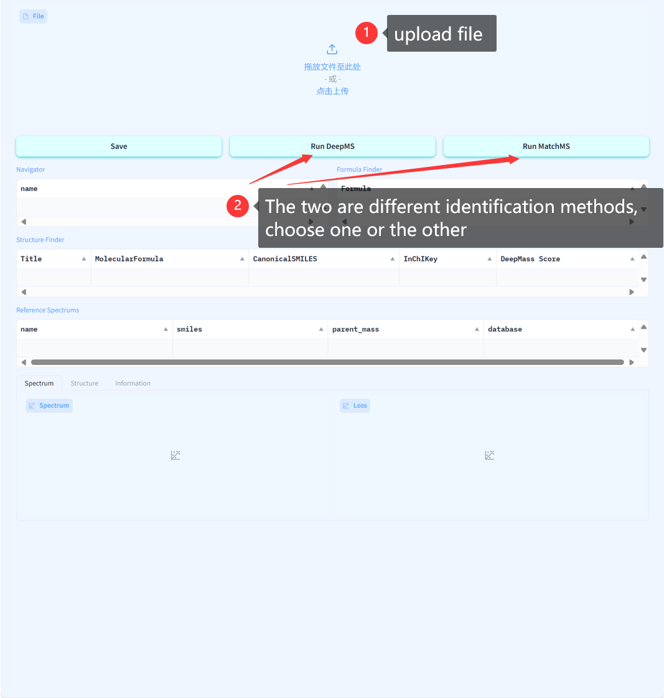

Manual
This is a simple manual that introduces the basic functions and operation methods of mass spectrometry identification.

- 1. Upload file：Requires you to upload a file in MGF format
- 2. Identification methods：Choose one of the two different identification methods, and the corresponding results will be generated later
- 3. Navigator：Choose one, and the corresponding results will be generated later
- 4. Formula Finder：Choose one, and the corresponding results will be generated later
- 5. Structure Finder：Choose one, and the corresponding results will be generated later
- 6. Reference Spectrums：Choose one, and the corresponding results will be generated later
- 7. Spectrum | structure | Information：Check out the different build results
- 8. Save：Choose to save all or one